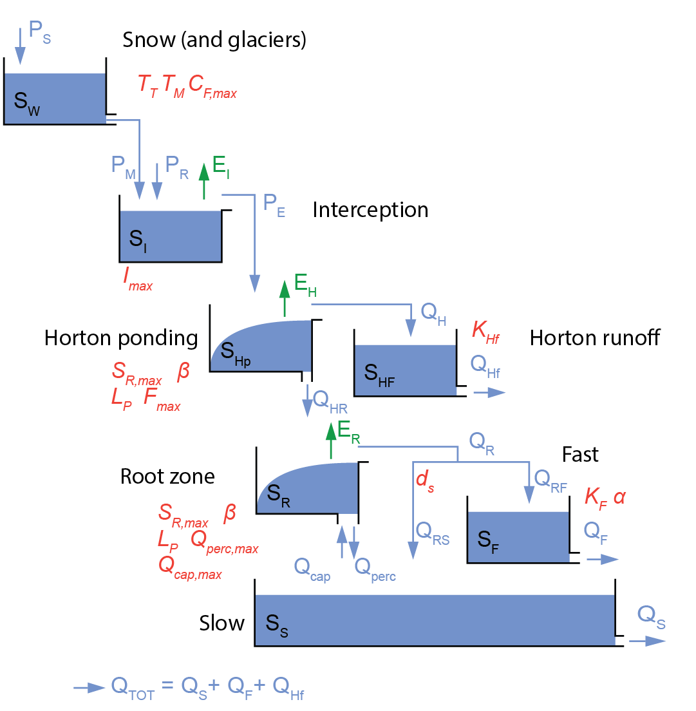

FLEXTopo
Introduction
This section describes the different vertical processes available as part of the vertical FLEXTopo concept. This concept is part of the wflow_flextopo model. The FLEXTopo model is a process-based model, which consists of different parallel classes connected through their groundwater storage. These classes are usually delineated from topographical data to represent the variability in hydrological processes across user-defined Hydrological Response Units (HRU). The main assumption underlying the concept, which was first introduced by Savenije (2010), is that different parts of the landscape fulfill different tasks in runoff generation and, hence, can be represented by different model structures. Commonly used classes include hillslopes, plateau and wetlands. Hillslopes are steep areas in a catchment and are generally forested. The dominant runoff process in hillslopes is assumed to be characterized by subsurface flow. Plateaus are defined as relatively flat and are relatively high above the stream, with deep groundwater levels. Depending on the specific conditions, the dominant runoff processes are groundwater recharge, quick subsurface flow and hortonian overland flow, which is especially important in agricultural areas. Saturation overland flow and capillary rise are the dominant processes on the riparian wetland class, where groundwater levels are shallow and assumed to rise quickly during an event. The strength of the concept is that the definition of classes and associated model structures is modular and flexible and not constrained by a predefined fixed model structure. The flexible approach allows to develop process-based models for different topographic, climatic, geologic and land use conditions, making use of the available data and expert knowledge. The FLEXTopo modeling approach has been applied in a lumped and distributed way in various applications across the globe (Gao et al., 2014; Euser et al., 2015; Hanus et al., 2021; Hrachowitz et al. 2021; Hulsman et al. 2021; Bouaziz et al., 2022).
The wflow_flextopo model is set-up in a modular way, implying that the user is free to determine the number of classes and which processes and/or parameters to include or exclude for each class. For each cell in the model domain, the percentage of each class in the cell is provided by the user in the staticmaps. The most complete model structure implemented in wflow_flextopo is shown in the figure below. However, it is also possible to bypass each bucket or to deactivate processes through parameter values (see FLEXTopo configuration). It is also possible for users to contribute to the code by adding different conceptualizations for the different storages. When defining several classes, the model structures for each class are implemented in parallel, except for the common glacier, snow and groundwater processes, which are not class specific. An example of a three classes model is also shown in the Figure below.
 Schematic representation of the FLEXTopo model for a single class model including all storages and fluxes. Main parameters are denoted in red.
 Example of a three class model with different model structure configurations per class
Example of a three class model with different model structure configurations per class
The descriptions below of each of the FLEXTopo model components are given for the most complete model structure with the symbols as shown in the schematic representation of the one class model in the Figure above. By bypassing storages and/or setting parameters to specific values, the model structure can be adapted to a user-defined model structure.
Snow
The snow model is described in Snow and glaciers.
Glaciers
Glacier processes are described in Snow and glaciers. Glacier modelling is enabled by specifying the following in the TOML file:
[model]
glacier = trueCorrection factors for forcing data
The $e_\mathrm{corr}$ and $p_\mathrm{corr}$ model parameters can be used to adjust the potential evaporation and precipitation, respectively.
Interception
After the snow module, rainfall $P_\mathrm{R}$ [mm t$^{-1}$] and snowmelt $P_\mathrm{M}$ [mm t$^{-1}$] enter the interception storage $S_\mathrm{I}$ [mm]. The maximum interception storage is defined by the $I_\mathrm{max}$ [mm] parameter for each class. Interception evaporation $E_\mathrm{I}$ [mm t$^{-1}$] occurs at potential rate $E_\mathrm{P}$ [mm t$^{-1}$] as long as there is enough water in the interception storage. Effective precipitation $P_\mathrm{E}$ [mm t$^{-1}$] flows out of the interception store when the storage capacity is exceeded. Interception evaporation is subtracted from potential evaporation to ensure total evaporation does not exceed potential evaporation.
The following equations apply:
\[ \mathrm{d}S_\mathrm{I}/\mathrm{d}t = (P_\mathrm{R} + P_\mathrm{M}) - E_\mathrm{I} - P_\mathrm{E}\]
\[ P_\mathrm{E} = \mathrm{max}(0, (S_\mathrm{I} - I_\mathrm{max})/\mathrm{d}t)\]
\[ E_\mathrm{I} = \mathrm{min}(E_\mathrm{P}, S_\mathrm{I}/\mathrm{d}t)\]
Hortonion ponding and runoff
Hortonian overland flow processes are represented by a combination of two storages: a horton ponding storage $S_\mathrm{Hp}$ [mm] and a runoff generating storage $S_\mathrm{Hf}$ [mm]. This conceptualization was introduced by de Boer-Euser (2017) and included in the plateau class to represent hortonian overland flow (infiltration excess overland flow) in agricultural fields. When the storage capacity of the ponding storage is exceeded, runoff $Q_\mathrm{H}$ [mm t$^{-1}$] is generated that enters the horton runoff storage. The horton runoff generating storage is included to slightly smooth the precipitation signal. However, the response time of the runoff generation storage $K_\mathrm{Hf}$ [t$^{-1}$] is very short to generate fast runoff $Q_\mathrm{Hf}$ [mm t$^{-1}$].
Effective precipitation $P_\mathrm{E}$ [mm t$^{-1}$] from the interception module enters the horton ponding storage, which has a maximum storage capacity $S_\mathrm{Hmax}$ [mm]. When the inflow exceeds the storage capacity, direct runoff is generated $Q_\mathrm{H,direct}$ [mm t$^{-1}$] and net infiltration in the horton ponding storage is denoted as $Q_\mathrm{H,in,net}$ [mm t$^{-1}$].
Evaporation from the horton ponding storage $E_\mathrm{H}$ [mm t$^{-1}$] is based on a simple formulation to express water stress. The equation describes how actual evaporation is linearly reduced when the relative horton ponding storage $\overline{S_\mathrm{Hp}}$ [-] is below a certain threshold $L_\mathrm{P}$ [-] parameter.
A beta function with parameter $\beta$ [-] is used to split the net infiltrating water to storage and to runoff $Q_\mathrm{H}$ [mm t$^{-1}$], to which is added the direct runoff $Q_\mathrm{H,direct}$ [mm t$^{-1}$].
The shape of the beta function for various values of $\beta$ [-] is shown below:
![]()
Additionally, water infiltrates from the horton ponding storage to the root zone storage ($Q_\mathrm{HR}$ [mm t$^{-1}$]), based on a formulation using a maximum infiltration capacity $F_\mathrm{max}$ [mm t$^{-1}$] and a decay coefficient $F_\mathrm{dec}$ [-].
The maximum storage capacity of the horton ponding storage is reduced when soils are likely to be frozen $S_\mathrm{Hmax,frost}$ [mm], i.e. during periods when the temperature is below zero for several consecutive days.
The following equations apply for the Horton ponding storage $S_\mathrm{Hp}$ [mm]:
\[ \mathrm{d}S_\mathrm{Hp}/\mathrm{d}t = P_\mathrm{E} - E_\mathrm{H} - Q_\mathrm{H} - Q_\mathrm{HR}\]
The constitutive equations are:
\[ Q_\mathrm{H,direct}=\mathrm{max}((S_\mathrm{Hp}+P_\mathrm{E}−S_\mathrm{Hmax});0.0)\]
\[ Q_\mathrm{H,in,net} = P_\mathrm{E} − Q_\mathrm{H,direct}\]
\[ \overline{S_\mathrm{Hp}} = S_\mathrm{Hp}/S_\mathrm{H,max}\]
\[ E_\mathrm{H} = \mathrm{min} ( (E_\mathrm{P} - E_\mathrm{I}) \cdot \mathrm{min}(\overline{S_\mathrm{Hp}}/L_\mathrm{P},1), S_\mathrm{Hp}/\mathrm{d}t )\]
\[ Q_\mathrm{H} = Q_\mathrm{H,in,net} \cdot (1-(1-\overline{S_\mathrm{Hp}})^\beta)\]
\[ Q_\mathrm{HR} = F_\mathrm{max} \cdot \mathrm{exp}(-F_\mathrm{dec} \cdot \overline{S_\mathrm{Hp}})\]
The reduction of the storage capacity of the horton ponding storage during frozen soil conditions is calculated following the equations provided by de Boer-Euser (2017):
\[ S_\mathrm{Hmax,frost} = F_\mathrm{T} \cdot S_\mathrm{Hmax}\]
with:
\[F_\mathrm{T} = \begin{cases} S_\mathrm{Hmin} & \text{if $F_\mathrm{acc,fr} < F_\mathrm{acc,fr0}$}\\ \frac{F_\mathrm{acc}}{F_\mathrm{acc,fr1} - F_\mathrm{acc,fr0}} - \frac{F_\mathrm{acc,fr0}}{F_\mathrm{acc,fr1} - F_\mathrm{acc,fr0}} & \text{if $ F_\mathrm{acc,fr0} \le F_\mathrm{acc,fr} \le F_\mathrm{acc,fr1}$}\\ 1 & \text{if $F_\mathrm{acc,fr} > F_\mathrm{acc,fr,1}$} \end{cases}\]
where $S_\mathrm{Hmin}$ [-], $F_\mathrm{acc,fr0}$ [degree t], $F_\mathrm{acc,fr1}$ [degree t] and $K_\mathrm{mf}$ [-] are all model parameters to describe: a coefficient to reduce $S_\mathrm{Hmax}$ to a minimum storage capacity, the minimum and maximum modelled accumulated frost and a melt coefficient for the frozen topsoil, respectively.
The following equations apply for the Horton fast runoff storage $S_\mathrm{Hf}$ [mm]:
\[ \mathrm{d}S_\mathrm{Hf}/\mathrm{d}t = Q_\mathrm{H} - Q_\mathrm{Hf}\]
\[ Q_\mathrm{Hf} = K_\mathrm{Hf}^{-1} \cdot S_\mathrm{Hf}\]
Root zone soil moisture
The incoming water from the interception and hortonian routines $Q_\mathrm{HR}$ [mm t$^{-1}$] enters the root zone storage $S_\mathrm{R}$ [mm]. The root zone storage has a maximum capacity $S_\mathrm{Rmax}$ [mm], which represents the volume of water in the unsaturated root zone, which is available to the roots of vegetation for transpiration. Abundant water which exceeds the capacity of the root zone storage cannot infiltrate and becomes directly available for runoff $Q_\mathrm{R,direct}$ [mm t$^{-1}$]. The net infiltration in the root zone storage is denoted as $Q_\mathrm{R,in,net}$ [mm t$^{-1}$].
A simple formulation to express water stress is used to calculate evaporation $E_\mathrm{R}$ [mm t$^{-1}$] from the root zone storage. The equation describes how actual evaporation is linearly reduced when the relative root zone storage $\overline{S_\mathrm{R}}$ [-] is below a certain threshold $L_\mathrm{P}$ [-] parameter.
Next, a beta function with parameter $\beta$ [-] describes the partitioning of incoming water to the root zone storage and to runoff $Q_\mathrm{R}$ [mm t$^{-1}$]. The water that leaves the root zone storage is partitioned into the fast storage and through preferential recharge to the slow storage, based on a splitter parameter $d_\mathrm{s}$ [-].
Water may also leave the root zone storage through percolation to the slow groundwater $Q_\mathrm{perc}$ [mm t$^{-1}$] or enter the root zone storage from the slow groundwater through capillary rise $Q_\mathrm{cap}$ [mm t$^{-1}$], based on a maximum percolation parameter $Q_\mathrm{perc,max}$ [mm t$^{-1}$] and a maximum capillary rise flux parameter $Q_\mathrm{cap,max}$ [mm t$^{-1}$].
The water balance equation for the root zone storage is:
\[ \mathrm{d}S_\mathrm{R}/\mathrm{d}t = Q_\mathrm{HR} - E_\mathrm{R} - Q_\mathrm{R} - Q_\mathrm{perc} + Q_\mathrm{cap}\]
The constitutive equations are:
\[ Q_\mathrm{R,direct}=\mathrm{max}((S_\mathrm{R}+Q_\mathrm{HR}−S_\mathrm{Rmax});0.0)\]
\[ Q_\mathrm{R,in,net} = Q_\mathrm{HR} − Q_\mathrm{R,direct}\]
\[ \overline{S_\mathrm{R}} = S_\mathrm{R}/S_\mathrm{R,max}\]
\[ E_\mathrm{R} = \mathrm{min} ( (E_\mathrm{P} - E_\mathrm{I} - E_\mathrm{H}) \cdot \mathrm{min}(\overline{S_\mathrm{R}}/L_\mathrm{P},1), S_\mathrm{R}/\mathrm{d}t )\]
\[ Q_\mathrm{R} = Q_\mathrm{R,in,net} \cdot (1-(1-\overline{S_\mathrm{R}})^\beta)\]
\[ Q_\mathrm{perc} = Q_\mathrm{perc,max} \cdot \overline{S_\mathrm{R}}\]
\[ Q_\mathrm{cap} = Q_\mathrm{cap,max} \cdot (1 - \overline{S_\mathrm{R}})\]
Fast storage and runoff
The outflow from the root zone storage $Q_\mathrm{R}$ [mm t$^{-1}$] is split with the splitter parameter $d_\mathrm{s}$ [-] into inflow in the fast storage $Q_\mathrm{RF}$ [mm t$^{-1}$] and inflow in the slow storage $Q_\mathrm{RS}$ [mm t$^{-1}$] to represent preferential recharge. The fast runoff storage $S_\mathrm{F}$ [mm] generates fast runoff $Q_\mathrm{F}$ [mm t$^{-1}$] through a simple non-linear equation with a recession constant $K_\mathrm{F}$ [t$^{-1}$] and an exponent $\alpha$ [-].
The following equations apply:
\[ \mathrm{d}S_\mathrm{F}/\mathrm{d}t = Q_\mathrm{RF} - Q_\mathrm{F}\]
\[ Q_\mathrm{RF} = Q_\mathrm{R} \cdot (1-d_\mathrm{s})\]
\[ Q_\mathrm{F} = K_\mathrm{F}^{-1} \cdot S_\mathrm{F}^{\alpha}\]
Common slow groundwater storage and runoff
The slow groundwater storage $S_\mathrm{S}$ [mm] is a shared storage for all the different classes. It is filled through preferential recharge from the outflow of the root zone storage $Q_\mathrm{RS}$ [mm t$^{-1}$] and through percolation $Q_\mathrm{perc}$ [mm t$^{-1}$]. It empties through capillary rise $Q_\mathrm{cap}$ [mm t$^{-1}$] and through a linear outflow $Q_\mathrm{S}$ [mm t$^{-1}$] with recession timescale coefficient $K_\mathrm{S}$ [t$^{-1}$].
Total streamflow $Q_\mathrm{TOT}$ [mm t$^{-1}$] is the weighted sum of the horton fast runoff and the fast runoff from the different classes based on the fraction of each class in a cell $F_\mathrm{hrufrac}$ [-] and the slow runoff, which is then routed downstream along the river network through the kinematic wave.
\[ \mathrm{d}S_\mathrm{S}/\mathrm{d}t = Q_\mathrm{RS} + Q_\mathrm{perc} - Q_\mathrm{S} - Q_\mathrm{cap}\]
\[ Q_\mathrm{RS} = Q_\mathrm{R} \cdot d_\mathrm{s}\]
\[ Q_\mathrm{S} = K_\mathrm{S}^{-1} \cdot S_\mathrm{S}\]
\[Q_\mathrm{TOT} = Q_\mathrm{S} + \sum_{class=1}^{n} (Q_\mathrm{F,class} + Q_\mathrm{Hf,class}) \cdot F_\mathrm{hrufrac,class}\]
References
de Boer-Euser, T. (2017). Added value of distribution in rainfall-runoff models for the Meuse basin PhD thesis, Delft University of Technology. https://doi.org/10.4233/uuid:89a78ae9-7ffb-4260-b25d-698854210fa8
Bouaziz, L. J. E., Aalbers, E. E., Weerts, A. H., Hegnauer, M., Buiteveld, H., Lammersen, R., Stam, J., Sprokkereef, E., Savenije, H. H. G., and Hrachowitz, M. (2022) Ecosystem adaptation to climate change: the sensitivity of hydrological predictions to time-dynamic model parameters, Hydrol. Earth Syst. Sci., 26, 1295–1318, https://doi.org/10.5194/hess-26-1295-2022
Euser, T., Hrachowitz, M., Winsemius, H. C., & Savenije, H. H. G. (2015). The effect of forcing and landscape distribution on performance and consistency of model structures. Hydrological Processes, 29(17), 3727–3743. https://doi.org/10.1002/hyp.10445
Gao, H., Hrachowitz, M., Fenicia, F., Gharari, S., & Savenije, H. H. G. (2014). Testing the realism of a topography-driven model (FLEX-Topo) in the nested catchments of the Upper Heihe, China. Hydrology and Earth System Sciences, 18(5), 1895–1915. https://doi.org/10.5194/hess-18-1895-2014
Hanus, S., Hrachowitz, M., Zekollari, H., Schoups, G., Vizcaino, M., and Kaitna, R. (2021) Future changes in annual, seasonal and monthly runoff signatures in contrasting Alpine catchments in Austria, Hydrol. Earth Syst. Sci., 25, 3429–3453, https://doi.org/10.5194/hess-25-3429-2021
Hrachowitz, M., Stockinger, M., Coenders-Gerrits, M., van der Ent, R., Bogena, H., Lücke, A., and Stumpp, C. (2021) Reduction of vegetation-accessible water storage capacity after deforestation affects catchment travel time distributions and increases young water fractions in a headwater catchment, Hydrol. Earth Syst. Sci., 25, 4887–4915, https://doi.org/10.5194/hess-25-4887-2021
Hulsman, P., Savenije, H. H. G., & Hrachowitz, M. (2021). Learning from satellite observations: Increased understanding of catchment processes through stepwise model improvement. Hydrology and Earth System Sciences, 25(2), 957–982. https://doi.org/10.5194/hess-25-957-2021
Savenije, H. H. G. (2010). HESS opinions “topography driven conceptual modelling (FLEX-Topo).” Hydrology and Earth System Sciences, 14(12), 2681–2692. https://doi.org/10.5194/hess-14-2681-2010